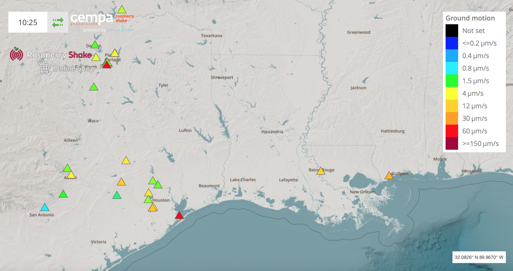
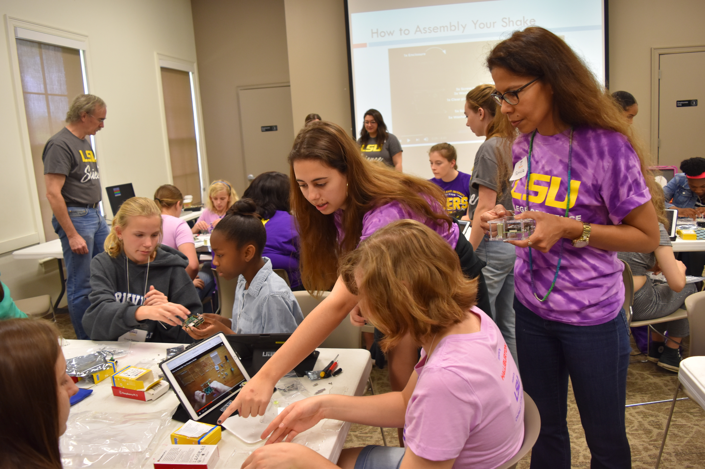

Scroll down and click an earthquake in the table to see seismograms from the LSU Shake, or watch the ground move in the continuous live stream from the Shake shown below!

Map showing LSU Shake location.
Middle school students constructing Raspberry Shakes at Our Earth, Our Lab event funded by Halliburton and LaSPACE.
The LSU Shake is currently in the Nicholson Building. Predicted times for different seismic waves from the earthquake to arrive at LSU are marked with gray flags and labeled.
Time is UTC time (-5 hours for CDT, our local time).
Try double clicking on the seismogram or using the mouse wheel to zoom in on the seismogram, drag to re-center, and shift double click to zoom out.
Click here for a map showing the worldwide Raspberry Shake network (LSU station name AM.R95B0).
ACKNOWLEDGMENTS - Jeff Springer assisted with sending data to the cloud from all the different locations we tried. Frank Womack is hosting the Shake in Nicholson. Parts of this webpage were developed using Philip Crotwell's seisplotjs modules, https://github.com/crotwell and his generous help.